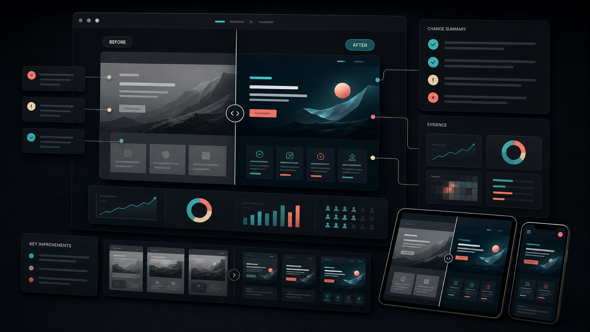

比較するのは画面ではなく、判断の差分
Before/Afterというと、見た目の変化を並べるだけになりがちです。しかし、実績ページで本当に伝えたいのは、何を課題と捉え、どの判断で改善したのかです。画面の差分だけでなく、情報設計、視線誘導、CTA、余白、トーンの変化を短く説明します。
特にポートフォリオでは、完成画面の美しさと同じくらい、改善前をどう読み解いたかが評価されます。Beforeを恥ずかしい素材として隠すのではなく、課題を発見する力の証拠として扱います。

スライダー、横並び、段階表示を使い分ける
ビジュアルの差が大きい場合は、左右比較が分かりやすくなります。細部の改善が中心なら、スライダーで同じ位置を重ねると変化が見えます。プロセスを伝えたい場合は、Before、Test、Afterのように段階表示にすると、検討の流れが追いやすくなります。
どの形式でも大切なのは、比較対象の焦点を絞ることです。画面全体を見せるより、ファーストビュー、フォーム、料金表、CTA周辺など、改善した箇所だけを切り出す方が読み手は理解しやすくなります。
変更理由は1つの注釈に詰め込みすぎない
注釈を増やしすぎると、比較画像はすぐ読みにくくなります。1つの差分につき、課題、変更、期待した効果を短く書く程度で十分です。詳しい話は本文に逃がし、画像上では視線を止める最小限の言葉だけを置きます。
- 改善前の課題を1行で示す
- 変更箇所は番号やピンで示す
- 成果がある場合は近くに置く
- 公開できない数値は行動変化や判断理由で補う
スマホでは比較を“積む順番”で成立させる
PCの横並び比較は、スマホではそのまま使えません。無理に2画面を並べると小さくなりすぎます。スマホでは、Before、課題、After、改善ポイントの順に縦に積む方が自然です。
また、スライダーUIはタッチ操作と相性が良い一方、誤操作も起きやすい要素です。タップ領域を広くし、補足テキストを近くに置き、スライダーに頼らなくても差分が伝わる構成にします。
成果は“何が良くなったか”で締める
最後に、改善後の画面だけを見せて終わらせず、何が良くなったのかを言葉で締めます。回遊しやすくなった、問い合わせの心理的負担が下がった、ブランドの印象が統一されたなど、読み手が次の相談を想像できる言葉にします。